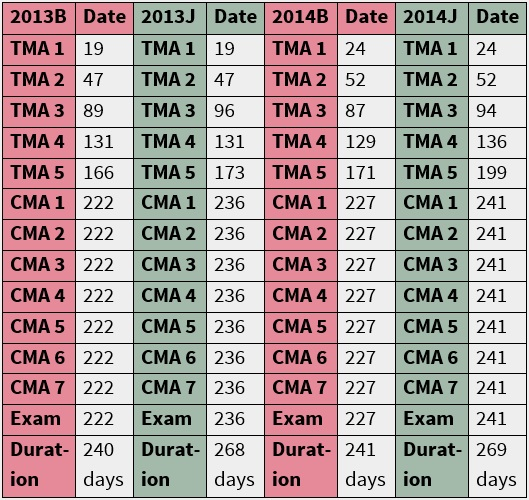
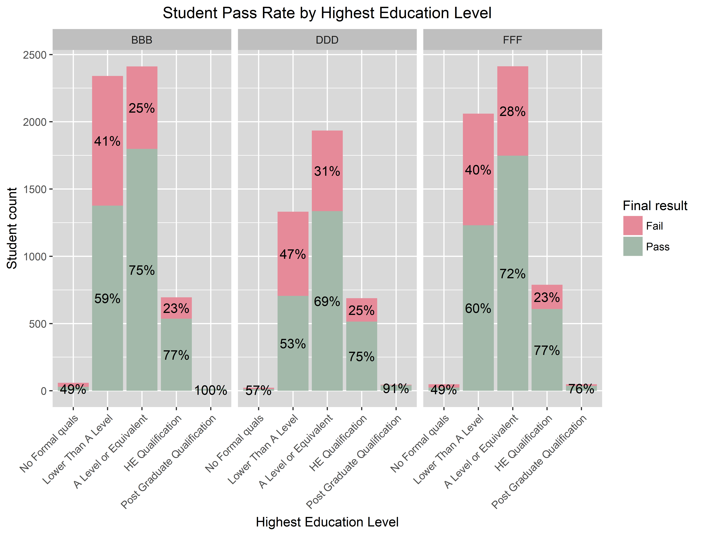

Student Performance Prediction:
A Deep Learning Approach
In this project I use Long Short-Term Memory networks (LSTMs) to predict the performance of Open University students. In addition, I compare the performance of the LSTMs with that of traditional machine learning models including decision trees, random forests, support vector machines, feed forward neural networks and more. I made use of the R programming language for most of the data formatting, while I used Python, in particular the Keras and scikit-learn packages, for modeling and normalization purposes.
Introduction

In January 2019, I obtained my master's degree after defending my master's thesis in which I showed that LSTMs can be of value when used to predict student performance compared to more commonly used machine learning models. In this project I replicate the research done in said thesis, be it with some modifications. The biggest change being the ability of this project's models to account for students joining the university's courses at different points in time due to changes in the data normalization methods. Consequently, the results of this project are better generalizable to educational settings in which students do not all start a course simultaneously, as is for example the case in most Massive Open Online Courses (MOOCs).
Predicting student performance is one of the most popular streams of research in the field of educational data mining. Being able to accurately predict student performance at an early stage could prove valuable in numerous ways. For example, when students that are at risk of failing a course can be identified, appropriate measures could be taken to assist these students. Pilot tests of these type of systems have already been conducted at Purdue University with promising results. (Arnold & Pistilli, 2012) The implemented systems managed to increase student retention rates as well as improve course grades. In addition, better admission policies could be designed when accurate prediction of student performance is feasible. In order to capture these benefits, accurate algorithms are necessary. Considering that deep learning methods are currently the state-of-the-art when it comes to predictive analytics, it is peculiar that so little research applying deep learning models to student performance prediction is available. My thesis (and by extension this project) serve as an attempt to fill that gap in the literature.
Public student data from the Open University Learning Analytics Dataset (OULAD) is used to compare the student performance prediction prowess of LSTMs and traditional machine learning models including decision trees, random forests, support vector machines, logistic regression models, naive Bayes classifiers and feed forward neural networks.
Data Understanding
The OULAD is a public dataset which contains anonymized data on roughly 30.000 students over seven distinct courses. The data covers a timespan of two years divided into a maximum of 4 periods (or presentations). The four distinct course presentations in this dataset include courses started in February 2013 (2013B) and February 2014 (2014B) as well as courses that started in October 2013 (2013J) and October 2014 (2014J). For each student in those courses, the dataset contains not only student information such as gender, highest education level, age band and region but also information on the clicks of the students in the Virtual Learning Environment (VLE) as well as data on the assessments that the students took and their assessment scores.
In order to make some visualizations of the data in R, it is first necessary to load the required packages and import the CSV files. I used the dplyr package for data formatting and the ggplot2 package for visualization purposes.
library("dplyr")
library("ggplot2")
# Import public Open University dataset
assessments <- read.csv("assessments.csv")
courses <- read.csv("courses.csv")
studentAssessment <- read.csv("studentAssessment.csv")
studentInfo <- read.csv("studentInfo.csv")
studentRegistration <- read.csv("studentRegistration.csv")
studentVle <- read.csv("studentVle.csv")
vle <- read.csv("vle.csv")
Now that the packages and datasets are loaded in, we can make our first graph visualizing the distribution of students over the different course presentations.
ggplot(data = studentInfo, aes(x = code_presentation, # Create a barchart with the data from the studentInfo dataframe
fill = code_module)) +
geom_bar(stat = 'count', position=position_dodge()) + # Make sure the height of the bars represents the count of students
facet_grid(.~code_module) + # Create the bar charts for each course (code_module)
theme(axis.text.x = element_text(angle = 90, vjust = 0.5), # Add some visual polish
axis.ticks.x = element_blank(),
panel.grid.major.x = element_blank(),
plot.title = element_text(hjust = 0.5),
panel.background = element_rect(fill = "grey85"),
plot.background = element_rect(fill = "transparent", color = NA),
strip.background = element_rect(fill = "grey75", colour = NA))+
scale_fill_brewer(palette="Set2") +
guides(fill=FALSE) +
ggtitle("Student Distribution") + # Add plot title
xlab("Code presentation") + # Add x-label
ylab("Student count") + # Add y-label
ggsave(filename = "Student Distribution.png", # Export the graph as a .png file
bg = "transparent", dpi = 600)
The code above generates the figure depicted below. The figure made with the ggplot2 package shows that the number of students varies wildly between courses. All courses except for GGG appear to have more students that start their course in October as opposed to February. The figure also illustrates that not all the courses are taught in all four periods. Only three out of the seven courses were taught for all four of the course presentations. Their course codes are BBB, DDD and FFF. Because those are the three courses with the most data samples, I decided to only make models and keep the data for those three courses.

Because of the anonymized nature of the dataset, the specific titles of the courses have not been revealed. The only information available on these courses is that course BBB is a social science course, while courses DDD and FFF belong to the science, technology, engineering and mathemetics (STEM) field. The course duration differs from period to period. When the course starts in October it tends to be longer than when it starts in February. Each of the three courses has graded assessments the students are expected to complete. However, if the student fails the final exam, they fail the course even if they have satisfactory assessment score. The amount of assessments in course FFF did not change over the four course presentation. However, courses BBB and DDD did experience structural changes when it comes to their assessments. The number of TMAs (Tutor Marked Assessments), CMAs (Computer Marked Assessments), their dates and the course duration are depicted in the three figures below.
Course BBB Assessments

Course DDD Assessments

Course FFF Assessments

As can be seen in the figures above, the final exam date is not always available. If that is the case, I assumed that the final exam took place on the final day of the course based on the following quote in the official OULAD documentation: "If the information about the final exam date is missing, it is at the end of the last presentation week."
Because nothing can be said about the final result of students that dropped out of the course, I removed all of the students that did not finish the course from the dataset. Specific drop-out prediction models are better suited to identify the students that will withdraw from the course. The final results of the students are categorized as either "fail", "pass", or "distinction". The models' prediction accuracy scores are likely to suffer significantly from having three target variable labels instead of two. That combined with the notion that the distinction between students that pass or fail a course is likely to be of more importance than that between students that pass or pass with distinction, made me decide to merge the "distinction" and "pass" target labels into one combined "pass" label.
studentInfo <- studentInfo[studentInfo$code_module %in% c("BBB","DDD","FFF"),] # Only retain students from courses BBB, DDD and FFF in the studentInfo df
studentInfo <- studentInfo[studentInfo$final_result != "Withdrawn",] # Remove those students that dropped out
studentVle <- studentVle[studentVle$code_module %in% c("BBB","DDD","FFF"),] # Only retain students from courses BBB, DDD and FFF in the studentVle df
studentInfo$final_result[studentInfo$final_result == "Distinction"] <- "Pass" # Turn the "Distinction" final result into "Pass"
Now it is possible to examine the data further for the three specified courses with a particular focus on the relationship between the variables and the final result. I personally like to make stacked bar charts for this purpose conveying the student pass rate for each categorical variable's level. The dplyr package is used to compute this pass rate statistic as is shown in the code below. Afterwards, ggplot2 is used once again to generate the chart. First, we take a look at the student pass rate by course presentation. To reiterate, the course presentation can be seen as the period in which the course takes place.
studentInfo %>%
mutate(code_presentation = as.factor(code_presentation), # Make sure factors have the right type
final_result = as.factor(final_result),
code_module = as.factor(code_module)) %>%
group_by(code_module, code_presentation, final_result) %>% # Group the data
summarise(count_final_result = n()) %>% # Get the count of students per group
mutate(count_man = sum(count_final_result)) %>% # Get the count of student in each course presentation
mutate(percent = count_final_result / count_man * 100) %>% # Compute the pass rate per presentation
ungroup() %>%
ggplot(aes(x = code_presentation, # Plot barchart with student pass rates
y = count_final_result,
group = final_result)) +
geom_bar(aes(fill = final_result),
stat = "identity") +
geom_text(aes(label = sprintf("%0.0f%%", percent)), # Add visual polish
position = position_stack(vjust = 0.5),
check_overlap = TRUE) +
theme(plot.title = element_text(hjust = 0.5),
panel.background = element_rect(fill = "grey85"),
plot.background = element_rect(fill = "transparent", color = NA),
strip.background = element_rect(fill = "grey75", colour = NA),
legend.background = element_rect(fill = "transparent", color = NA)) +
scale_fill_manual(values = c("#E68A99","#A3B9AA")) + # Bar colors
ggtitle("Student Pass Rate by Period") + # Add plot title
xlab("Code presentation") + # Add x-label
ylab("Student count") + # Add y-label
labs(fill = "Final result") + # Add legend title
facet_grid(.~code_module) + # Create the bar charts for each course (code_module)
ggsave(filename = "PR_plot.png", # Export the graph as a .png file
bg = "transparent", dpi = 600)
Similar to the first graph, this bar chart shows the student count in each course presentation, but this time only for course BBB, DDD and FFF respectively. On top of that, the graph shows the pass rate in each period. On a first glance, we can say that the pass rate in each period is between 59 and 75 percent. Moreover, the courses taught in the final period, October 2014, appear to have a slightly higher passing rate than the three preceding periods for these three courses. This difference is more pronounced in course BBB and FFF than in DDD however. On average, the passing rates do not appear to be vastly different between courses.

The next graph shows the passing rate by gender. The code in the following bar charts is virtually the same as in the code block above. The only differences are the replacement of the categorical variable on the x-axis and some changes in the visual polish such as font size. Each of the three courses appears to have a significantly different gender distribution. In course BBB, a social science course, there are disproportionately more female students than male students. In contrast, there are significantly more male students than female students in course FFF, which is a STEM course. Course DDD, another STEM course, also has more male than female students, but the discrepancy is not as big. The one thing the three courses have in common is that female students appear to do slightly better than male students judging from their superior pass rate.

The following bar chart illustrates the pass rate by age band. The student either belongs in age category 0-35, 35-55 or 55+. The figure shows that there are very little students that are 55 years or older. By far the most of the students belong in the 0-35 age category. It is interesting to note that students between 35 and 55 years old appear to perform slightly better than the younger students. The sample size of older students is too small to base conclusions off of.
The relationship between the students' former education level and pass rate is depicted in the graph below. On average, it appears to be the case that the higher the education level, the higher the pass rate is. This indicates that highest education level might be an interesting predictor for student performance. The distributions are also widely similar among courses with the bulk of the students having either a A-level or lower qualification, while only a select few students have no formal qualifications or a post graduate degree.
The OULAD also contains information on the amount of times the students attempted the course. The next plot shows that students that do not have any previous attempts, have a higher pass rate than students students that do have one or two previous attempts. The number of students that attempt a course more than three times is so small that it becomes difficult to draw any conclusions from those groups.

The following graph shows that a small fraction of the students has a disability. These students seem to perform slightly worse than students that do not have a disability. The particular type of disability could provide more insight into the effect of certain disabilities on student performance, but this data is not available and due to ethical concerns it might not be appropriate to use in performance predictions.
 <
<The relationship between pass rate and IMD band is showcased in the next plot. IMD stand for Index of Multiple Deprivation and it's England's official measure of relative deprivation for small areas or neighborhoods. This measure says something about how deprived the student's neighborhood is relative to other neighborhoods ranging from the least deprived (90-100% band) to the most deprived (0-10% band). The bar without a label comprises the students whose IMD index value was missing. It is interesting to note that a large proportion of students with missing values for IMD band passed the course. This might indicate that having a missing value for IMD band has some predictive power when it comes to predicting student performance. Therefore, it might be worth it to look into why these values are missing. In general, it seems to be the case that the less deprived the student's neighborhood, the higher the passing rate. In other words, students living in well-off areas tend to perform better.
Due to the many categories involved in the studied credits variable, I chose to plot the relationship between the number of credits for the modules the student is currently studying and the pass rate by means of a box plot. The very similar box plots below show that there is hardly any connection to be drawn between the number of credits a student is studying and his or her likelihood to pass the course.
ggplot(data = studentInfo,aes(x = final_result,
y = studied_credits,
fill = factor(final_result, levels = c("Fail", "Pass")))) +
geom_boxplot() + # Create a boxplot
scale_y_continuous(limits=c(0, 450)) + # Determine scale cut-off values
theme(plot.title = element_text(hjust = 0.5), # Add visual polish
panel.background = element_rect(fill = "grey85"),
plot.background = element_rect(fill = "transparent", color = NA),
strip.background = element_rect(fill = "grey75", colour = NA),
legend.background = element_rect(fill = "transparent", color = NA)) +
scale_fill_manual(values = c("#E68A99","#A3B9AA")) +
ggtitle("Student Pass Rate by Studied Credits") +
xlab("Final result") +
ylab("Studied credits") +
labs(fill = "Final result") +
facet_grid(.~code_module) +
ggsave(filename = "PR_credits_plot.png",
bg = "transparent", dpi = 600)

Due to the fact that the number of times students click in the VLE each day gets recorded, it is possible to plot the average number of clicks over time for those students that passed as well as those that failed the course, which is exactly what is shown in the graph below. The graphs illustrate that there are some clear patterns when it comes to the number of clicks in the VLE for the different courses. For example, in course FFF the average number of clicks substantially increase as the course nears the end. The daily amount of clicks here also seems more volatile for failing students than for passing students. The other two courses appear to have more subtle patterns. There also are some clear outliers in the data. The sudden spike in the 2014B course period for course DDD is the most noteable. There are a few instances in which students have an extraordinarily large amount of clicks (6000+) on a certain day. It is not clear whether this is due to faulty data collection or whether the student actually clicked that many times. It could be worth it to examine whether these clicks have predictive power when it comes to predicting student performance. The type of object that the student clicked on within the VLE can also be identified. Perhaps there are certain resources students can click on that say relatively more about the students' chances of success.
studentVle_fr <- merge(studentVle, studentInfo[,c(1:3,12)], by.x = c(1,2,3)) # Merge studentVle and studentInfo dataframes
studentVle_fr[,-c(4)] %>% # Use the new df without site_id variable
mutate(date = as.integer(date), # Make sure variables have appropriate types
sum_click = as.integer(sum_click),
code_module = as.factor(code_module),
final_result = as.factor(final_result),
code_presentation = as.factor(code_presentation)) %>%
distinct(code_module, code_presentation,id_student, sum_click, date, final_result) %>% # Remove duplicate rows
group_by(code_module,code_presentation, final_result, date) %>% # Group df
summarise(avg_clicks = mean(sum_click)) %>% # Compute avg clicks summary statistic
ungroup() %>%
ggplot(mapping = aes(x = date, y = avg_clicks, group = final_result, color = final_result)) + # Plot linechart
geom_line(size=1.0) +
theme(plot.title = element_text(hjust = 0.5), # Visual polish
panel.background = element_rect(fill = "grey85"),
plot.background = element_rect(fill = "transparent", color = NA),
strip.background = element_rect(fill = "grey75", colour = NA),
legend.background = element_rect(fill = "transparent", color = NA)) +
scale_color_manual(values = c("#E68A99","#A3B9AA")) +
ggtitle("Students' Average Clicks over Time") +
xlab("Date") +
ylab("Average clicks") +
labs(color = "Final result") +
facet_grid(code_module ~ code_presentation) +
ggsave(filename = "Clicks_Time_plot.png",
bg = "transparent", dpi = 600)

The scatterplot below shows the relationship between the sum of clicks and the number of days the student was active in the VLE. In this case, active means that the student clicked at least one time in the VLE that specific day. Instead of showing the progression over time, this plot utilizes the measures computed by the end of the course. It is apparent that students that did not click in the VLE often and were not active on the platform for many days are more likely to fail the course than active students with a lot of clicks. Naturally, there are some exceptions but the overall pattern is evident and makes intuitive sense.
studentVle_fr[,-c(4)] %>%
mutate(date = as.integer(date),
sum_click = as.integer(sum_click),
code_module = as.factor(code_module),
final_result = as.factor(final_result),
id_student = as.factor(id_student),
code_presentation = as.factor(code_presentation)) %>%
distinct(code_module, code_presentation,id_student, sum_click, final_result) %>%
group_by(code_module,code_presentation, id_student) %>%
mutate(sum_clicks = sum(sum_click)) %>% # compute sum of clicks for each student
mutate(active_days = n())%>% # compute active days for each student
ungroup() %>%
distinct(code_module, code_presentation,id_student,active_days, sum_clicks, final_result) %>%
ggplot(mapping = aes(x = sum_clicks, y = active_days, color = final_result)) +
geom_point(alpha = 0.2) + # scatterplot
theme(plot.title = element_text(hjust = 0.5),
panel.background = element_rect(fill = "grey85"),
plot.background = element_rect(fill = "transparent", color = NA),
strip.background = element_rect(fill = "grey75", colour = NA),
legend.background = element_rect(fill = "transparent", color = NA)) +
scale_color_manual(values = c("#E68A99","#A3B9AA")) +
ggtitle("Students' Active Days by Sum of Clicks") +
xlab("Sum of clicks") +
ylab("Active days") +
labs(color = "Final result") +
facet_grid(code_module ~ code_presentation) +
ggsave(filename = "Days_Clicks_plot.png",
bg = "transparent", dpi = 600)

There are a number of assessments students have to complete during the courses. The following line charts show the average assessment scores over time for both students that failed and students that passed the course. There appears to be a clear distinction in average assessment scores between failing and passing students. Not surprisingly, assessment scores could therefore be a valuable predictor for student performance. Since the assessment structure for course BBB changed in October 2014, the pattern is different than in the previous years. The university decided to implement a smaller amount of assessments than in the periods before. The same goes for October 2013 in course DDD. The assessment structure in course FFF stayed the same over all four periods. The structural changes at different points in time might be a valuable indicator of the models' stability. It would be interesting to see how much worse the models perform for courses BBB and DDD compared to course FFF if they do at all.
# merge dataframes to have the necessary data in one dataframe
studentAssessment_fr <- merge(studentAssessment, assessments[,c(1:5)], by.x = 1)
studentAssessment_fr <- merge(studentAssessment_fr, studentInfo[,c(1:3,12)], by.x = c(2,6,7))
studentAssessment_fr[!is.na(studentAssessment_fr$score),-c(4,5,6,8)] %>%
mutate(date = as.integer(date),
score = as.integer(score),
code_module = as.factor(code_module),
final_result = as.factor(final_result),
code_presentation = as.factor(code_presentation)) %>%
distinct(code_module, code_presentation,id_student, score, date, final_result) %>%
group_by(code_module,code_presentation, final_result, date) %>%
summarise(avg_score = mean(score)) %>% # compute average score per final result class
ungroup() %>%
ggplot(mapping = aes(x = date, y = avg_score, group = final_result, color = final_result)) +
geom_line(size = 1.2) +
theme(plot.title = element_text(hjust = 0.5),
panel.background = element_rect(fill = "grey85"),
plot.background = element_rect(fill = "transparent", color = NA),
strip.background = element_rect(fill = "grey75", colour = NA),
legend.background = element_rect(fill = "transparent", color = NA)) +
scale_color_manual(values = c("#E68A99","#A3B9AA")) +
ggtitle("Assessment Score Over Time") +
xlab("Date") +
ylab("Average score") +
labs(color = "Final result") +
facet_grid(code_module ~ code_presentation) +
ggsave(filename = "Score_Date_plot.png",
bg = "transparent", dpi = 600)

Now that we have gotten a better understanding of our data and an idea of which variables could be useful to predict student performance, we can conclude the data understanding phase. The variables that we can consider to use for our models can be categorized into two groups. First, the variables that are not tracked over time (stationary variables) such as age, gender, highest education etc. Second, the variables that are tracked over time, such as the number of clicks, the average assessment score and the number of assessments completed each day. After some initial tests using backward selection, I found that the stationary variables do not significantly improve the performance of the models when added to the variables that are tracked over time. The performance of the models did not appear to improve beyond the three variables of (1) the amount of times a student clicks in the VLE every day, (2) the amount of assessments the student completed every day and (3) the student's average assessment score updated daily. However, since it's also possible with the OULAD to break down the clicks in the VLE, it would be interesting to explore the effects of including the categories of resources that students clicked on in the VLE as additional predictors at a later stage. Additionally, I still want to create a complete LSTM model with the stationary features included as auxiliary features at a later stage. For now however, the focus remains on the three non-stationary features mentioned above. The next challenge is to prepare the data in such a way that it can be used as input for the models.
Data Preparation
In this data preparation phase I will demonstrate how I cleaned, formatted and normalized the data so that it can be used as input for the models. Because the LSTMs and the traditional machine learning models require differing data input formats, we will end up with two datasets with different formats. The LSTM requires a three-dimensional array as input corresponding to (samples, time steps, features) in which the samples are the students, the time steps are the course days and the features are the variables. In contrast, the traditional machine learning methods do not take into account the time steps and only require a two-dimensional array of (samples, features). To make sure that both models work with exactly the same data, I merged the time steps with the features dimension for the traditional machine learning models. Consequently, there will not just be a single "number of clicks" variable for example. Instead, there will be multiple feature columns for the number of clicks at each distinct day in the course. The difference between the LSTMs and the traditional methods in this case is that the LSTMs by design take into account the time dimension of the data and will recognize that the clicks at course day 30 will occur later in the sequence than the clicks at course day 5. Because the order of the feature columns does not matter when it comes to traditional methods, the traditional models will not be able to make this distinction. More on the differences between LSTMs and the common machine learning methods can be found in the Modeling section.
Just like in the previous section we have to load in the packages and data as well as only retain non-dropouts from courses BBB, DDD and FFF. Additionally, we create a new student identifier feature merging the student ID with the course code and course presentation for more convenient data formatting.
#Load packages
library("dplyr")
# Import public Open University dataset
assessments <- read.csv("assessments.csv")
courses <- read.csv("courses.csv")
studentAssessment <- read.csv("studentAssessment.csv")
studentInfo <- read.csv("studentInfo.csv")
studentRegistration <- read.csv("studentRegistration.csv")
studentVle <- read.csv("studentVle.csv")
vle <- read.csv("vle.csv")
# Create an identifier for each student combining course module, course presentation and student id
studentInfo$identifier <- paste(studentInfo$code_module, studentInfo$code_presentation, studentInfo$id_student)
# Only retain students in courses BBB, DDD and FFF & remove those that dropped out
studentInfo <- studentInfo[studentInfo$code_module %in% c("BBB","DDD","FFF"),]
withdrawnStudents <- studentInfo[studentInfo$final_result == "Withdrawn",]
studentInfo <- studentInfo[studentInfo$final_result != "Withdrawn",]
studentVle <- studentVle[studentVle$code_module %in% c("BBB","DDD","FFF"),]
studentRegistration <- studentRegistration[studentRegistration$code_module %in% c("BBB","DDD","FFF"),]
As we have seen in the previous section, not all the exam dates are available. Some of them are registered as missing values. The OULAD documentation showed that if the exam date is missing, it took place at the end of the final course week. Therefore, I imputed the missing values with the final course presentation day using a for-loop.
# Impute missing exam dates with the final day of the course
# [Official documentation: "If the information about the final exam date is missing, it is at the end of the last presentation week."]
for(i in 1:nrow(assessments)){
m <- as.character(assessments$code_module[i])
p <- as.character(assessments$code_presentation[i])
if (is.na(assessments$date[i]) & assessments$assessment_type[i] == "Exam"){
assessments$date[i] <- courses$module_presentation_length[courses$code_module == m & courses$code_presentation == p]
}
}
Next, I ended up merging datasets to get a more comprehensive representation of the data instead of information being spread out over multiple datasets. The FullVle dataframe combines data on the students' actions in the VLE and the information on the resources in the VLE. The FullAssessments dataframe combines data on the students' activity when it comes to assessments as well as the information on the assessments themselves. The final exam date is also added as a column to the FullAssessments dataframe. Additionally, the duplicated data instances are removed and the names of two columns are updated to better reflect their meaning.
# Merge dataframes
FullAssessments <- merge(x = studentAssessment, y = assessments[assessments$code_module %in% c("BBB","DDD","FFF"),], by = "id_assessment")
FullVle <- merge(x = studentVle, y = vle[,c(1,4)], by = "id_site")
FullAssessments <- merge(x = FullAssessments, y = assessments[assessments$assessment_type == "Exam",c(1,2,5)], by = c("code_module", "code_presentation"), all.x = TRUE) # Add final exam date to FullAssessments df
FullAssessments <- FullAssessments[!duplicated(FullAssessments),] # Remove duplicate rows
names(FullAssessments)[c(9,11)] <- c("date", "exam_date") # Change column names
Next, a new dataframe is created to store the exam submission dates of students, since students in course DDD have differing submission dates. In other words, the exam was not taken by all students at the same moment in time. Afterwards, we add this "exam_submitted_date" column to the bigger FullAssessments dataframe. This column features the exam submission dates of DDD students that we just retrieved, while it shows missing values for students from course BBB and FFF since their exam submission date is not avaiable. For these students we use the final exam date as their submission date, assuming that everyone in these two courses has a predetermined examination date. Finally, only the assessments that took place before the final exam are retained because I want to predict whether the student passes or fails the course before the final exam has taken place.
# In course DDD students have differing exam submission dates, so a dataframe is created to collect those.
DDD_examdates <- FullAssessments %>%
select(code_module, code_presentation, id_student,assessment_type, date_submitted) %>%
filter(assessment_type == "Exam")
DDD_examdates$assessment_type <- NULL
names(DDD_examdates)[4] <- "exam_submitted_date"
FullAssessments <- merge(x = FullAssessments, y = DDD_examdates, by = c("code_module", "code_presentation", "id_student"), all.x=TRUE) # Add exam_submitted date column of DDD course to the FullAssessments dataframe
FullAssessments$exam_submitted_date[is.na(FullAssessments$exam_submitted_date)] <- FullAssessments$exam_date[is.na(FullAssessments$exam_submitted_date)] # Impute the exam_submitted dates of the other two courses with exam_date
FullAssessments <- FullAssessments[FullAssessments$date_submitted < FullAssessments$exam_submitted_date,] # Only retain those assessments that occured before the final exam submission date
Furthermore, I add the exam submission date to the studentRegistration dataframe which contains information on the registration and deregistration of students. I also did not retain the deregistered students in the dataset in line with the reasoning to exclude drop-outs explained earlier. The for-loop below makes sure that the exam_submission_date is imputed with the course presentation's exam date whenever the submission date is missing.
# Add the exam submission date from the FullAssesments df to each student record in the studentRegistration df
studentRegistration <- merge(x = studentRegistration[is.na(studentRegistration$date_unregistration),], y = FullAssessments[,c(1,2,3,12)], by = c("code_module", "code_presentation", "id_student"), all.x = TRUE)
studentRegistration <- studentRegistration[!duplicated(studentRegistration),]
# Make sure that if the exam_submission_date is not available, it is imputed with exam date of the course presentation from the assessments df
for (i in 1:nrow(studentRegistration)){
if (is.na(studentRegistration$exam_submitted_date[i]) == TRUE){
studentRegistration$exam_submitted_date[i] <- assessments$date[assessments$assessment_type == "Exam" &
assessments$code_module == studentRegistration$code_module[i] &
assessments$code_presentation == studentRegistration$code_presentation[i]]
}
}
The following piece of code is used to compute the variables we wanted to use for the prediction. In particular, the number of assignments submitted before the final exam date, the student's average score updated daily and the student's daily number of clicks in the VLE.
# Compute the number of assignments submitted before the final exam date and the average score which is updated daily
FullAssessments <- merge(x = FullAssessments[,1:8], y = studentRegistration[,c(1:4,6)], by = c("code_module", "code_presentation", "id_student"), all.y = TRUE) # Add registration date & finalized exam submission date to FullAssessments df
AsgmtCounts <- aggregate(id_assessment ~ code_module + code_presentation + id_student + date_submitted, data = FullAssessments, FUN = length) # Compute the number of assessments each student submitted every day
names(AsgmtCounts)[5] <- "Asgmt_Count"
AsgmtScores <- aggregate(score ~ code_module + code_presentation + id_student + date_submitted, data = FullAssessments, FUN = sum) # Compute the sum of assessment scores every day
names(AsgmtScores)[5] <- "Asgmt_sumScore"
# Create a new dataframe in which daily assessment counts and scores are added to the studentRegistration dataframe
Asgmts <- merge(x = studentRegistration[,c(1:4,6)], y = AsgmtCounts,by = c("code_module", "code_presentation", "id_student"))
Asgmts <- merge(x = Asgmts, y = AsgmtScores,by = c("code_module", "code_presentation", "id_student", "date_submitted"))
names(Asgmts)[4] <- "date"
# Compute the number of clicks a student made in a particular course and semester
Clicks <- aggregate(sum_click ~ code_module + code_presentation + id_student + date, data = FullVle, FUN=sum)
Clicks <- merge(x = Clicks[Clicks$code_module %in% c("BBB","DDD","FFF"),], y = studentRegistration[,c(1:4,6)], by = c("code_module", "code_presentation", "id_student"), all.y = TRUE)
Clicks <- Clicks[!duplicated(Clicks),] # Remove duplicated rows
Clicks <- Clicks[Clicks$date < Clicks$exam_submitted_date,] # Remove clicks that have been made on or after the final exam date conditional on course and semester
ClicksAsgmts <- merge(x = Clicks, y=Asgmts, by = c("code_module", "code_presentation", "id_student", "date", "date_registration", "exam_submitted_date"), all.x = TRUE, all.y = TRUE) # Merge Clicks and Asgmts dataframes
ClicksAsgmts <- ClicksAsgmts[apply(ClicksAsgmts,1,function(x)any(!is.na(x))),] # Remove rows in which all values are missing
The start of every course is marked as day 0. Students can often access the VLE before the course actually starts however. For example, when a student clicked in the VLE 25 days before his course actually starts, this is indicated by a value of -25 for the "date" variable. For modeling purposes, we want to create sequences from the point at which data started to be tracked for the specific course to the final day of the course. In the next block of code, the minimum and maximum dates of the courses are retrieved and the number of days the student has been active in the course are computed by subtracting the minimum date of each course by the maximum date. Additionally, values of 0 are imputed whenever no clicks or assignments have been observed on a certain day.
# Expand the date range from the earliest day in the course to the end of the course
min_date_BBB <- min(ClicksAsgmts$date[ClicksAsgmts$code_module == "BBB"]) # Minimum date of course BBB
min_date_DDD <- min(ClicksAsgmts$date[ClicksAsgmts$code_module == "DDD"]) # Minimum date of course DDD
min_date_FFF <- min(ClicksAsgmts$date[ClicksAsgmts$code_module == "FFF"]) # Minumum date of course FFF
ClicksAsgmts$min_date[ClicksAsgmts$code_module == "BBB"] <- min_date_BBB
ClicksAsgmts$min_date[ClicksAsgmts$code_module == "DDD"] <- min_date_DDD
ClicksAsgmts$min_date[ClicksAsgmts$code_module == "FFF"] <- min_date_FFF
max_date_BBB <- max(ClicksAsgmts$exam_submitted_date[ClicksAsgmts$code_module == "BBB"])
max_date_DDD <- max(ClicksAsgmts$exam_submitted_date[ClicksAsgmts$code_module == "DDD"])
max_date_FFF <- max(ClicksAsgmts$exam_submitted_date[ClicksAsgmts$code_module == "FFF"])
ClicksAsgmts$days[ClicksAsgmts$code_module == "BBB"] <- max_date_BBB - ClicksAsgmts$min_date[ClicksAsgmts$code_module == "BBB"]
ClicksAsgmts$days[ClicksAsgmts$code_module == "DDD"] <- max_date_DDD - ClicksAsgmts$min_date[ClicksAsgmts$code_module == "DDD"]
ClicksAsgmts$days[ClicksAsgmts$code_module == "FFF"] <- max_date_FFF - ClicksAsgmts$min_date[ClicksAsgmts$code_module == "FFF"]
There is no record if the student does not click in the VLE or submit an assessment on that specific day. However, we need all three of our variables to be full sequences in which all the days of the course are represented. Therefore, we make another dataframe to help construct this full sequence by replicating each row in the dataframe as many times as the amount of days the student spends in the course. Afterwards, we create a date column that accurately represents the order of days in each student's sequence. By merging this dataframe and the ClicksAsgmts dataframe with the three variables we can make the complete dataframe. The process of merging the dataset gives rise to missing values for the days in which students did not click in the VLE or did not submit any assignments. We impute these missing values with zeroes instead but only if the day is between the registration date of the student and the final exam submission date. All missing values before the student's registration date and after the student submitted his or her exam are transformed to "-1" values at a later stage. LSTMs can pad sequences with predetermined values so that they can essentially be skipped over without being taken into account during modeling. I chose for the "-1" value because that value cannot occur anywhere else in the sequence, which means it is appropriate to use for padding purposes. This padding procedure only works for LSTMs however. Therefore, we will transform the "-1" values to zeroes when we transform the LSTM dataset into the traditional machine learning model dataset.
# Make another df to help constructing a range of day registered until day before final exam for each student
dateReference <- merge(x= studentRegistration[,c(1:4,6)], y = ClicksAsgmts[,c(1,2,3,10,11,12)], by = c("code_module", "code_presentation", "id_student"), all.y = TRUE)
dateReference <- dateReference[!duplicated(dateReference),] # remove duplicate rows
row.names(dateReference) <- NULL # reset row names
dateReference <-dateReference[rep(row.names(dateReference), dateReference$day),] # replicate rows for the amount of days a student spent in the course
dateReference$date <- sequence(rle(as.character(dateReference$identifier))$lengths)+dateReference$min_date-1 # create date column representing the order of days in each student's sequence
# Merge ClicksAsgmts and dateReference dataframes to create a complete dataframe
fulldf <- merge(x = ClicksAsgmts, y = dateReference, by = c("code_module", "code_presentation", "id_student","identifier", "date", "date_registration", "exam_submitted_date", "min_date", "days"), all.y = TRUE)
fulldf <- fulldf[with(fulldf, order(code_module, code_presentation, id_student, date)),]
# Impute missing values after student registration and before final exam submission date with 0
fulldf$sum_click[is.na(fulldf$sum_click) & fulldf$date < fulldf$exam_submitted_date & fulldf$date >= fulldf$date_registration] <- 0
fulldf$Asgmt_Count[is.na(fulldf$Asgmt_Count) & fulldf$date < fulldf$exam_submitted_date & fulldf$date >= fulldf$date_registration] <- 0
fulldf$Asgmt_sumScore[is.na(fulldf$Asgmt_sumScore) & fulldf$date < fulldf$exam_submitted_date & fulldf$date >= fulldf$date_registration] <- 0
One of the variables we wanted to use was the average assessment score of the student updated daily. By using the daily sum of assessment scores variable and daily the sum of assessments variable stored in the dataframe we can compute this daily average score. The "ave" function in R makes it possible to compute the cumulative sum over level combinations of factors, in this case it is grouped by the composite student identifier.
# Compute average assignment score by using the cumulative sum of scores updated daily
fulldf$csum_score[!is.na(fulldf$sum_click)] <- ave(fulldf$Asgmt_sumScore[!is.na(fulldf$sum_click)], fulldf$identifier[!is.na(fulldf$sum_click)], FUN = cumsum)
fulldf$csum_asgmts[!is.na(fulldf$Asgmt_Count)] <- ave(fulldf$Asgmt_Count[!is.na(fulldf$Asgmt_Count)], fulldf$identifier[!is.na(fulldf$Asgmt_Count)], FUN = cumsum)
fulldf$Avg_score <- round(fulldf$csum_score/fulldf$csum_asgmts,2)
fulldf$Avg_score[is.nan(fulldf$Avg_score)] <- 0
Now it is time to finalize the dataset by including the relevant variables, imputing missing values with "-1" values for padding purposes and renaming variables where needed.
# Finalize complete dataframe used for modeling
fulldf <- fulldf[,c(1:5, 10, 11, 14, 15)]
fulldf <- merge(x = fulldf, y = studentInfo[,c(1:3, 12)], by = c("code_module", "code_presentation", "id_student"), all.x = TRUE)
fulldf <- fulldf[with(fulldf, order(code_module, code_presentation, id_student, date)),]
# Pad the shorter sequence lengths with '-1' values, so the LSTM knows when to start/end each sequence
fulldf$sum_click[is.na(fulldf$sum_click)] <- -1
fulldf$Asgmt_Count[is.na(fulldf$Asgmt_Count)] <- -1
fulldf$csum_asgmts[is.na(fulldf$csum_asgmts)] <- -1
fulldf$Avg_score[is.na(fulldf$Avg_score)] <- -1
fulldf$final_result <- droplevels(fulldf$final_result)
names(fulldf)[7] <- "asgmts"
Finally, the dataset is split in three smaller dataframes; one for each course. These are then exported as .csv files, so that they can be loaded into Python for normalization and modeling purposes.
# Split the dataframe into 3 smaller dataframes, 1 for each course
BBB_Train <- fulldf[fulldf$code_module == "BBB",]
DDD_Train <- fulldf[fulldf$code_module == "DDD",]
FFF_Train <- fulldf[fulldf$code_module == "FFF",]
# Write the dataframes to a csv file
write.csv(x = BBB_Train, "BBB_Train.csv")
write.csv(x = DDD_Train, "DDD_Train.csv")
write.csv(x = FFF_Train, "FFF_Train.csv")
From now on, Python will be used to transform the datasets into their final format so they can serve as input for the LSTM. The additional transformations required to make the dataset compatible for the traditional machine learning models will also be done in Python.
Modeling
This is the modeling phase.
Results
This is the results phase.